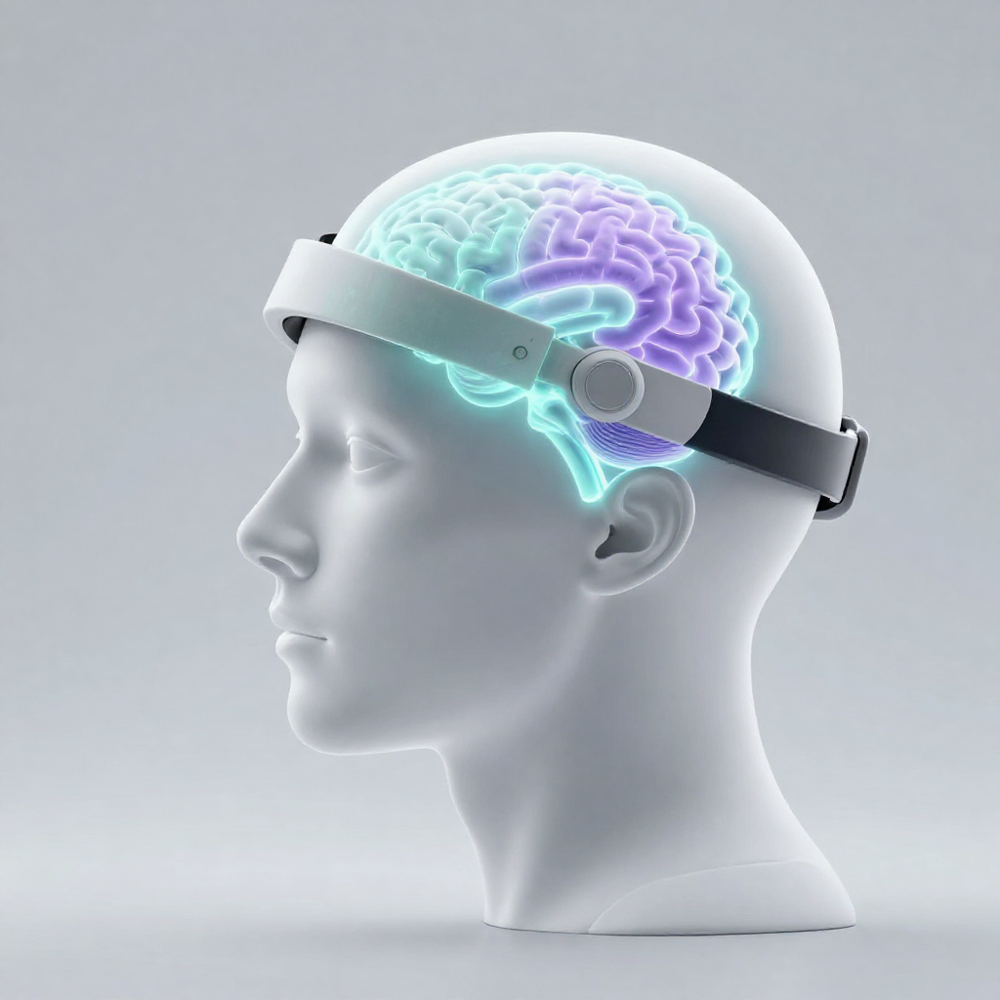

Neuroscience
Research Initiative
Understanding the Human Mind
Understanding the Human Mind
through EEG & Artificial Intelligence
Nurolab is an interdisciplinary research initiative focused on developing intelligent systems for understanding cognitive and mental well-being using Electroencephalography (EEG), Artificial Intelligence, Signal Processing, and Human-Centered Technology.
EEG
Artificial Intelligence
Neuroscience
Signal Processing


The Challenge
Why Nurolab?
Millions of people experience cognitive and mental health challenges every day. Current assessment methods mainly rely on clinical observations, behavioural analysis, and self-reported experiences. Nurolab explores how Electroencephalography (EEG) and Artificial Intelligence can provide objective physiological insights that support neuroscience research and cognitive well-being.
Self Reports
Most assessments depend on questionnaires and personal experiences.
Clinical Evaluation
Clinical interviews are valuable but require trained professionals.
EEG + AI
Nurolab combines brain signals with AI to discover cognitive patterns.
Core Technologies
Research Areas
Nurolab combines neuroscience, EEG technology, artificial intelligence, and human-centered design to build intelligent systems for understanding cognitive and mental well-being.
EEG Technology
Artificial Intelligence
Signal Processing
Human-Centered Technology
Future Innovation
System Design
System Architecture
Raw EEG signals move through four stages before they reach a researcher as an interpretable insight.
EEG Sensors
→
Signal Processing
→
AI Models
→
Dashboard
Intelligent Workflow
How Nurolab Works
Nurolab follows an intelligent pipeline that transforms raw EEG signals into meaningful cognitive insights using advanced signal processing and artificial intelligence.
1
EEG Signal Acquisition
Brain activity is captured using wearable EEG sensors in real time.
2
Signal Processing
Remove noise, detect artifacts and preprocess EEG signals for reliable analysis.
3
AI Analysis
Machine Learning and Deep Learning models identify cognitive patterns, attention levels and mental workload.
4
Insights Dashboard
Interactive dashboards present interpretable reports and wellness-oriented recommendations.
Interactive Demonstration
EEG Signal Processing Simulation
Explore how raw EEG brain signals are progressively cleaned, processed and analysed before Artificial Intelligence generates meaningful cognitive insights.
Signal simulation — based on public EEG data
What happens to the signal at each step
Watch the same signal change shape as it passes through the pipeline - from raw and noisy, to filtered, to a final risk reading.
Normal
Compared against this person's own calm baseline
Our Team
Meet the Contributors
Nurolab is a collaborative project developed by students and researchers specializing in EEG signal processing, artificial intelligence, hardware, software engineering, documentation, and web development.
Riddhi
Aarti
Vandana
Suruchi
Hardware Team
Development Team
Future Vision
Nurolab Roadmap
Our long-term vision is to build accessible neurotechnology solutions that combine EEG, Artificial Intelligence and Human-Centered Design for cognitive wellness research.
Phase 1
EEG Research Platform
Build the core research platform and establish EEG data acquisition workflows.
Phase 2
AI Cognitive Models
Develop Machine Learning models for cognitive state estimation, stress detection and attention analysis.
Phase 3
Real-Time Dashboard
Design interactive dashboards for visualization, monitoring and interpretable AI insights.
Future
Healthcare & Research Collaboration
Collaborate with healthcare institutions and researchers to expand clinical validation and wearable neurotechnology.